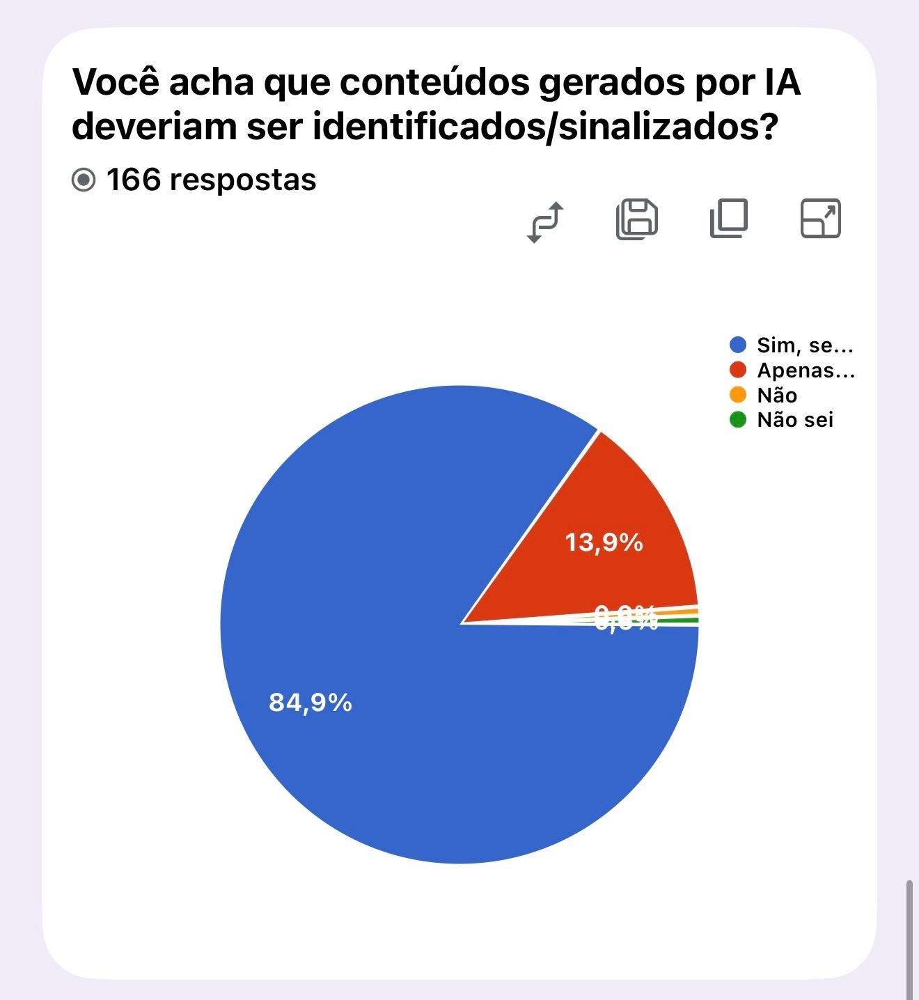
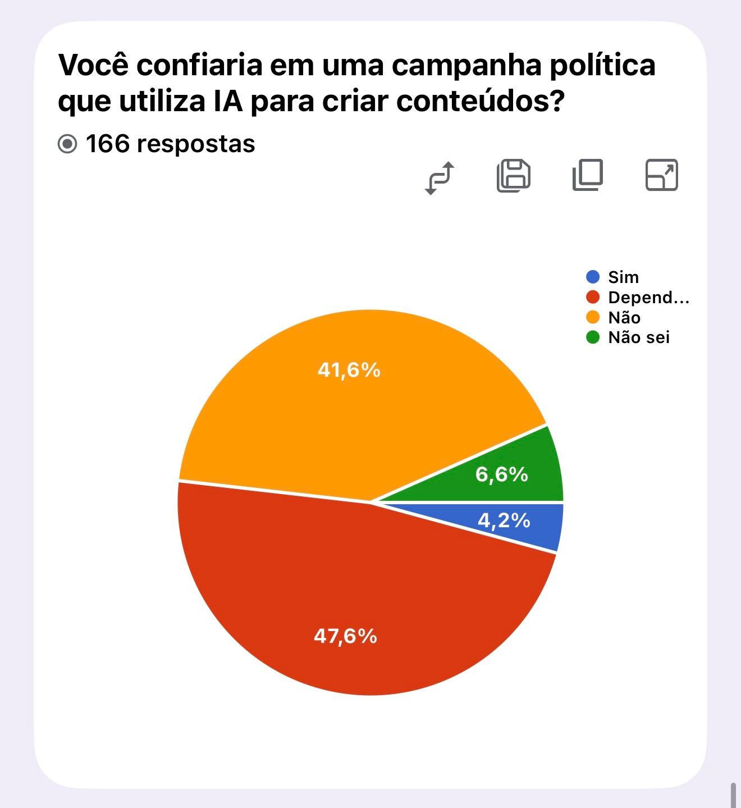
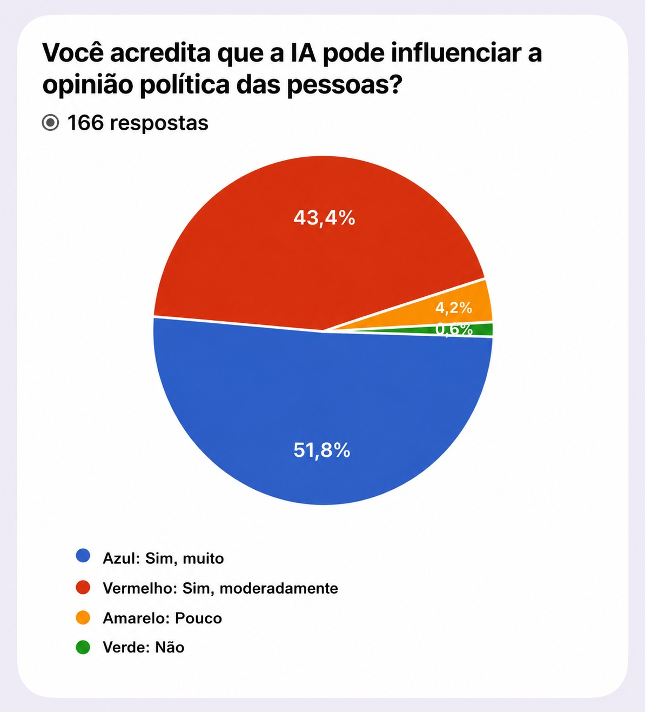
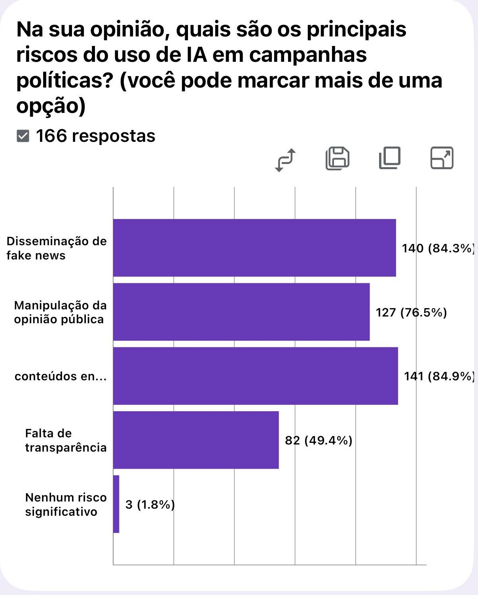

Apresentação do Projeto de Pesquisa
Este projeto de pesquisa científica foi estruturado e amadurecido nas instalações institucionais da Etec Profa Ermelinda Giannini Teixeira, sediada na cidade de Santana [...]
Trabalho de Conclusão de Curso - Análise Científica e Propostas Sociais
Este projeto de pesquisa científica foi estruturado e amadurecido nas instalações institucionais da Etec Profa Ermelinda Giannini Teixeira, sediada na cidade de Santana [...]
Para investigar a fundo as ramificações sociopolíticas geradas pela IA generativa, esta pesquisa científica valeu-se de uma densa revisão bibliográfica e documental q[...]







Como resultado concreto das análises científicas e visando reestruturar as dinâmicas eleitorais, propõe-se a formalização de um Projeto de Lei que institui obrigaçõ[...]
Tipificar criminalmente a conduta de difusão intencional de dados falsos gerados por IA.
Obrigar a inserção indissociável de assinaturas criptográficas e metadados indeléveis nas mídias sintéticas.
Determinar prazos impositivos para que provedores e redes sociais removam deepfakes ilícitas.